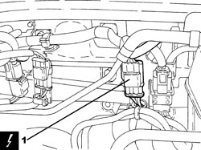
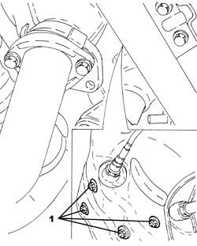
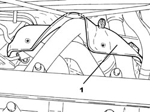

1072C42 EXHAUST MANIFOLD LOWER BULKHEAD R R
- Path
- Procedures > 10 ENGINE > 1072 INLET AND EXHAUST MANIFOLDS > 1072C EXHAUST MANIFOLDS > 1072C42 EXHAUST MANIFOLD LOWER BULKHEAD R R
- Kind
- repair procedure (removal / refitting; the operation number is the code)
- Applies to
- engines: 2.2 JTS; all production periods
- Interactive page
- https://sloeber94.github.io/elrnDB-aBrrSpdr/en/#/946001948
Applies to: engines: 2.2 JTS; all production periods
 Removing
Removing
 Refitting
Refitting- Position the vehicle on a lift.
- Make sure that the ignition key is in the OFF position, then disconnect the battery terminal (-).
Description | Connector | |
|---|---|---|
- | Battery |
Op. 1072C43 EXHAUST MANIFOLD UPPER BULKHEAD R R
1. Disconnect the electrical connection for the left upper Lambda sensor.
Description | Connector | |
|---|---|---|
1 | Lambda sensor on pre-catalyzer |

Applies to: engines: 2.2 JTS; all production periods
- Release the electrical wiring for the Lambda sensors from the fastenings on the exhaust manifold lower heat shield.
1. Working from underneath the vehicle, undo the nuts fixing the exhaust manifold lower heat shield.

Applies to: engines: 2.2 JTS; all production periods
1. Working from the engine compartment, remove the exhaust manifold lower heat shield.

Applies to: engines: 2.2 JTS; all production periods
Refitting
Removing- Place the exhaust manifold lower heat shield in its housing.
- Tighten the nuts fixing the exhaust manifold lower heat shield.
- Connect the electrical connection for the left upper Lambda sensor.
Op. 1072C43 EXHAUST MANIFOLD UPPER BULKHEAD R R
- Connect the negative battery terminal.
- Remove the vehicle from the lift.
Topics linked from this page (3)
Topics that link to this page (13)
- 1016C10 SINGLE CYLINDER HEAD - R.R. AND REPLACE GASKET
- 1020D36 FLYWHEEL SIDE OIL SEAL - REPLACE FOR MANUAL GEARBOX WITH HYDRAULIC SELECTION VERSIONS
- 1020D38 FLYWHEEL SIDE OIL SEAL - REPLACE
- 1024B10 ENGINE FLYWHEEL - R + R FOR VERSIONS WITH MANUAL GEARBOX
- 1024B11 ENGINE FLYWHEEL - R.R. FOR MANUAL GEARBOX WITH HYDRAULIC SELECTION VERSIONS
- 1028H10 CONNECTING ROD AND PISTON SET - R.R
- 1072C13 EXHAUST MANIFOLD GASKET - REPLACE
- 1072C16 EXHAUST MANIFOLD WITH CATALYTIC CONVERTER - R.R.
- 1810A20 CLUTCH - R + R
- 1810A28 CLUTCH - R.R. FOR MANUAL GEARBOX WITH HYDRAULIC SELECTION VERSIONS
- 1820B30 CLUTCH HYDRAULIC ACTUATOR - R.R.
- 2110A10 MANUAL GEARBOX AND DIFFERENTIAL - R + R
- 2110A11 MANUAL GEARBOX WITH DIFFERENTIAL - R.R. FOR VERSIONS WITH HYDRAULIC SELECTION